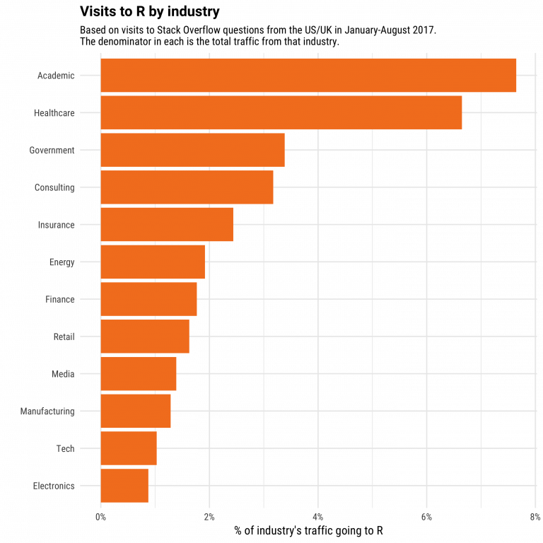
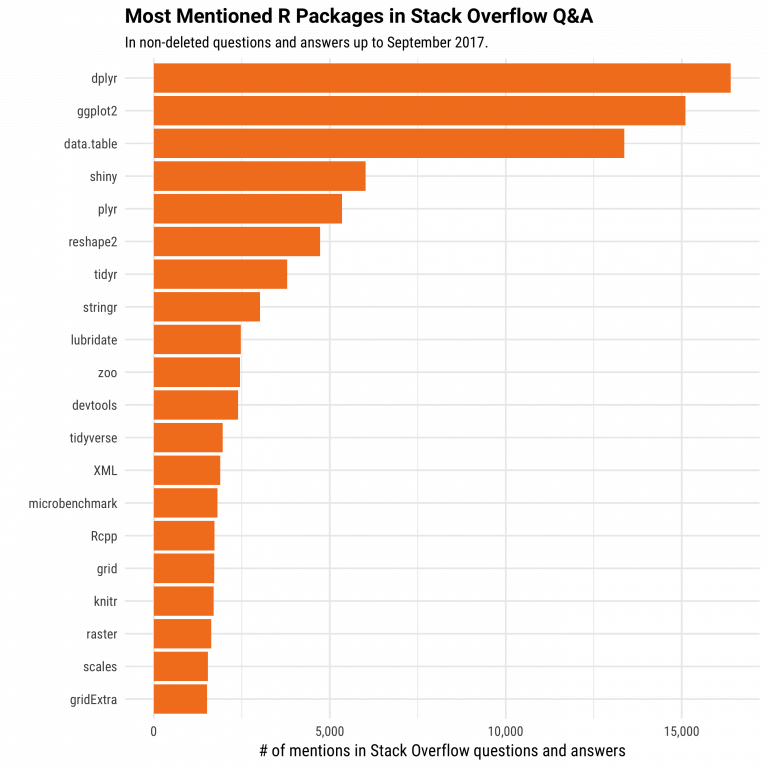
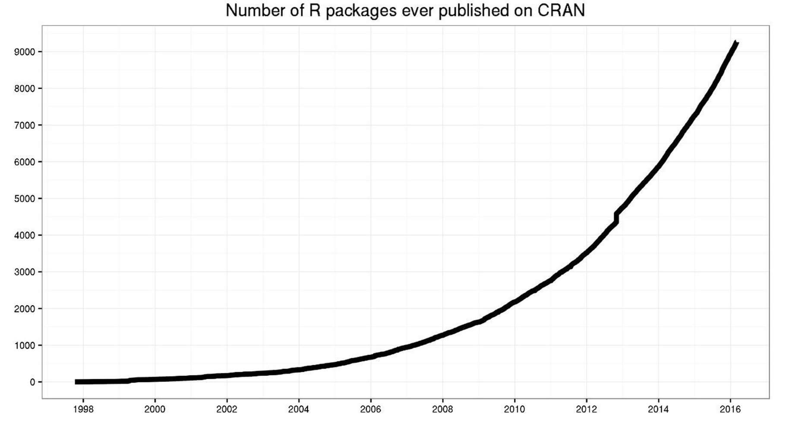
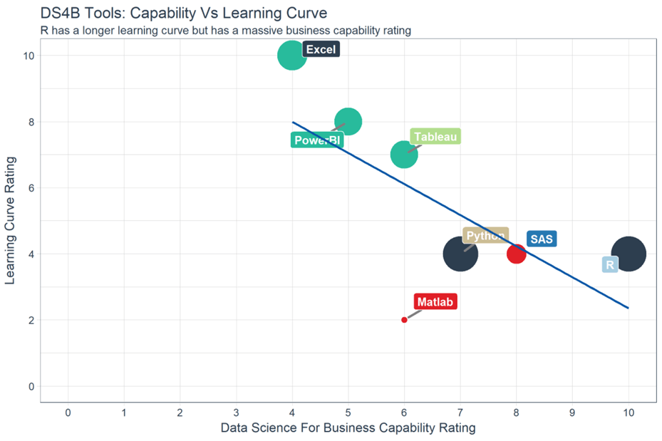
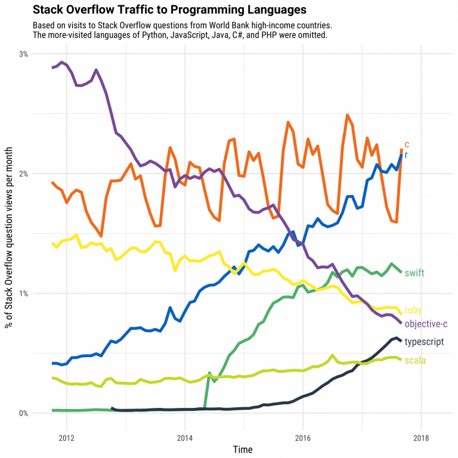

<!DOCTYPE html>

<html>

<head>

<meta charset="utf-8" />
<meta name="generator" content="pandoc" />
<meta http-equiv="X-UA-Compatible" content="IE=EDGE" />


<title>Lesson 1</title>

<script src="site_libs/jquery-1.11.3/jquery.min.js"></script>
<meta name="viewport" content="width=device-width, initial-scale=1" />
<link href="site_libs/bootstrap-3.3.5/css/flatly.min.css" rel="stylesheet" />
<script src="site_libs/bootstrap-3.3.5/js/bootstrap.min.js"></script>
<script src="site_libs/bootstrap-3.3.5/shim/html5shiv.min.js"></script>
<script src="site_libs/bootstrap-3.3.5/shim/respond.min.js"></script>
<script src="site_libs/jqueryui-1.11.4/jquery-ui.min.js"></script>
<link href="site_libs/tocify-1.9.1/jquery.tocify.css" rel="stylesheet" />
<script src="site_libs/tocify-1.9.1/jquery.tocify.js"></script>
<script src="site_libs/navigation-1.1/tabsets.js"></script>
<script src="site_libs/accessible-code-block-0.0.1/empty-anchor.js"></script>
<link href="site_libs/font-awesome-5.1.0/css/all.css" rel="stylesheet" />
<link href="site_libs/font-awesome-5.1.0/css/v4-shims.css" rel="stylesheet" />
<!DOCTYPE html PUBLIC "-//W3C//DTD HTML 4.01//EN" "http://www.w3.org/TR/html4/strict.dtd">
<html>
<head>
  <meta http-equiv="Content-Type" content="text/html; charset=utf-8">
  <meta http-equiv="Content-Style-Type" content="text/css">
  <title></title>
  <meta name="Generator" content="Cocoa HTML Writer">
  <meta name="CocoaVersion" content="1504">
  <!-- this script changes the anchor position -->
  <!-- http://jsfiddle.net/ianclark001/rkocah23/ -->
<script>
(function(document, history, location) {
  var HISTORY_SUPPORT = !!(history && history.pushState);

  var anchorScrolls = {
    ANCHOR_REGEX: /^#[^ ]+$/,
    OFFSET_HEIGHT_PX: 65,

    /**
     * Establish events, and fix initial scroll position if a hash is provided.
     */
    init: function() {
      this.scrollToCurrent();
      $(window).on('hashchange', $.proxy(this, 'scrollToCurrent'));
      $('body').on('click', 'a', $.proxy(this, 'delegateAnchors'));
    },

    /**
     * Return the offset amount to deduct from the normal scroll position.
     * Modify as appropriate to allow for dynamic calculations
     */
    getFixedOffset: function() {
      return this.OFFSET_HEIGHT_PX;
    },

    /**
     * If the provided href is an anchor which resolves to an element on the
     * page, scroll to it.
     * @param  {String} href
     * @return {Boolean} - Was the href an anchor.
     */
    scrollIfAnchor: function(href, pushToHistory) {
      var match, anchorOffset;

      if(!this.ANCHOR_REGEX.test(href)) {
        return false;
      }

      match = document.getElementById(href.slice(1));

      if(match) {
        anchorOffset = $(match).offset().top - this.getFixedOffset();
        $('html, body').animate({ scrollTop: anchorOffset});

        // Add the state to history as-per normal anchor links
        if(HISTORY_SUPPORT && pushToHistory) {
          history.pushState({}, document.title, location.pathname + href);
        }
      }

      return !!match;
    },
    
    /**
     * Attempt to scroll to the current location's hash.
     */
    scrollToCurrent: function(e) {
      if(this.scrollIfAnchor(window.location.hash) && e) {
        e.preventDefault();
      }
    },

    /**
     * If the click event's target was an anchor, fix the scroll position.
     */
    delegateAnchors: function(e) {
      var elem = e.target;

      if(this.scrollIfAnchor(elem.getAttribute('href'), true)) {
        e.preventDefault();
      }
    }
  };

    $(document).ready($.proxy(anchorScrolls, 'init'));
})(window.document, window.history, window.location);
</script>

</head>
<body>
</body>
</html>

<style type="text/css">
  code{white-space: pre-wrap;}
  span.smallcaps{font-variant: small-caps;}
  span.underline{text-decoration: underline;}
  div.column{display: inline-block; vertical-align: top; width: 50%;}
  div.hanging-indent{margin-left: 1.5em; text-indent: -1.5em;}
  ul.task-list{list-style: none;}
    </style>


<style type="text/css">
h1 {
  font-size: 34px;
}
h1.title {
  font-size: 38px;
}
h2 {
  font-size: 30px;
}
h3 {
  font-size: 24px;
}
h4 {
  font-size: 18px;
}
h5 {
  font-size: 16px;
}
h6 {
  font-size: 12px;
}
.table th:not([align]) {
  text-align: left;
}
</style>


<link rel="stylesheet" href="style.css" type="text/css" />


<style type = "text/css">
.main-container {
  max-width: 940px;
  margin-left: auto;
  margin-right: auto;
}
code {
  color: inherit;
  background-color: rgba(0, 0, 0, 0.04);
}
img {
  max-width:100%;
}
.tabbed-pane {
  padding-top: 12px;
}
.html-widget {
  margin-bottom: 20px;
}
button.code-folding-btn:focus {
  outline: none;
}
summary {
  display: list-item;
}
</style>


<style type="text/css">
/* padding for bootstrap navbar */
body {
  padding-top: 60px;
  padding-bottom: 40px;
}
/* offset scroll position for anchor links (for fixed navbar)  */
.section h1 {
  padding-top: 65px;
  margin-top: -65px;
}
.section h2 {
  padding-top: 65px;
  margin-top: -65px;
}
.section h3 {
  padding-top: 65px;
  margin-top: -65px;
}
.section h4 {
  padding-top: 65px;
  margin-top: -65px;
}
.section h5 {
  padding-top: 65px;
  margin-top: -65px;
}
.section h6 {
  padding-top: 65px;
  margin-top: -65px;
}
.dropdown-submenu {
  position: relative;
}
.dropdown-submenu>.dropdown-menu {
  top: 0;
  left: 100%;
  margin-top: -6px;
  margin-left: -1px;
  border-radius: 0 6px 6px 6px;
}
.dropdown-submenu:hover>.dropdown-menu {
  display: block;
}
.dropdown-submenu>a:after {
  display: block;
  content: " ";
  float: right;
  width: 0;
  height: 0;
  border-color: transparent;
  border-style: solid;
  border-width: 5px 0 5px 5px;
  border-left-color: #cccccc;
  margin-top: 5px;
  margin-right: -10px;
}
.dropdown-submenu:hover>a:after {
  border-left-color: #ffffff;
}
.dropdown-submenu.pull-left {
  float: none;
}
.dropdown-submenu.pull-left>.dropdown-menu {
  left: -100%;
  margin-left: 10px;
  border-radius: 6px 0 6px 6px;
}
</style>

<script>
// manage active state of menu based on current page
$(document).ready(function () {
  // active menu anchor
  href = window.location.pathname
  href = href.substr(href.lastIndexOf('/') + 1)
  if (href === "")
    href = "index.html";
  var menuAnchor = $('a[href="' + href + '"]');

  // mark it active
  menuAnchor.parent().addClass('active');

  // if it's got a parent navbar menu mark it active as well
  menuAnchor.closest('li.dropdown').addClass('active');
});
</script>

<!-- tabsets -->

<style type="text/css">
.tabset-dropdown > .nav-tabs {
  display: inline-table;
  max-height: 500px;
  min-height: 44px;
  overflow-y: auto;
  background: white;
  border: 1px solid #ddd;
  border-radius: 4px;
}

.tabset-dropdown > .nav-tabs > li.active:before {
  content: "";
  font-family: 'Glyphicons Halflings';
  display: inline-block;
  padding: 10px;
  border-right: 1px solid #ddd;
}

.tabset-dropdown > .nav-tabs.nav-tabs-open > li.active:before {
  content: "&#xe258;";
  border: none;
}

.tabset-dropdown > .nav-tabs.nav-tabs-open:before {
  content: "";
  font-family: 'Glyphicons Halflings';
  display: inline-block;
  padding: 10px;
  border-right: 1px solid #ddd;
}

.tabset-dropdown > .nav-tabs > li.active {
  display: block;
}

.tabset-dropdown > .nav-tabs > li > a,
.tabset-dropdown > .nav-tabs > li > a:focus,
.tabset-dropdown > .nav-tabs > li > a:hover {
  border: none;
  display: inline-block;
  border-radius: 4px;
  background-color: transparent;
}

.tabset-dropdown > .nav-tabs.nav-tabs-open > li {
  display: block;
  float: none;
}

.tabset-dropdown > .nav-tabs > li {
  display: none;
}
</style>

<!-- code folding -->


<style type="text/css">

#TOC {
  margin: 25px 0px 20px 0px;
}
@media (max-width: 768px) {
#TOC {
  position: relative;
  width: 100%;
}
}

@media print {
.toc-content {
  /* see https://github.com/w3c/csswg-drafts/issues/4434 */
  float: right;
}
}

.toc-content {
  padding-left: 30px;
  padding-right: 40px;
}

div.main-container {
  max-width: 1200px;
}

div.tocify {
  width: 20%;
  max-width: 260px;
  max-height: 85%;
}

@media (min-width: 768px) and (max-width: 991px) {
  div.tocify {
    width: 25%;
  }
}

@media (max-width: 767px) {
  div.tocify {
    width: 100%;
    max-width: none;
  }
}

.tocify ul, .tocify li {
  line-height: 20px;
}

.tocify-subheader .tocify-item {
  font-size: 0.90em;
}

.tocify .list-group-item {
  border-radius: 0px;
}


</style>


</head>

<body>


<div class="container-fluid main-container">


<!-- setup 3col/9col grid for toc_float and main content  -->
<div class="row-fluid">
<div class="col-xs-12 col-sm-4 col-md-3">
<div id="TOC" class="tocify">
</div>
</div>

<div class="toc-content col-xs-12 col-sm-8 col-md-9">


<div class="navbar navbar-default  navbar-fixed-top" role="navigation">
  <div class="container">
    <div class="navbar-header">
      <button type="button" class="navbar-toggle collapsed" data-toggle="collapse" data-target="#navbar">
        <span class="icon-bar"></span>
        <span class="icon-bar"></span>
        <span class="icon-bar"></span>
      </button>
      <a class="navbar-brand" href="index.html">An R Tutorial for Beginners</a>
    </div>
    <div id="navbar" class="navbar-collapse collapse">
      <ul class="nav navbar-nav">
        <li>
  <a href="index.html">
    <span class="fas fa-home"></span>
     
    Home
  </a>
</li>
<li>
  <a href="about.html">
    <span class="fas fa-info-circle"></span>
     
    About
  </a>
</li>
<li class="dropdown">
  <a href="#" class="dropdown-toggle" data-toggle="dropdown" role="button" aria-expanded="false">
    <span class="fas fa-bars"></span>
     
    Lessons
     
    <span class="caret"></span>
  </a>
  <ul class="dropdown-menu" role="menu">
    <li class="dropdown-submenu">
      <a href="#" class="dropdown-toggle" data-toggle="dropdown" role="button" aria-expanded="false">Introduction</a>
      <ul class="dropdown-menu" role="menu">
        <li>
          <a href="R-course_lesson-1.html">Lesson 1</a>
        </li>
        <li>
          <a href="R-course_lesson-2.html">Lesson 2</a>
        </li>
        <li>
          <a href="R-course_lesson-3.html">Lesson 3</a>
        </li>
        <li>
          <a href="R-course_lesson-4.html">Lesson 4</a>
        </li>
      </ul>
    </li>
    <li class="dropdown-submenu">
      <a href="#" class="dropdown-toggle" data-toggle="dropdown" role="button" aria-expanded="false">Data Preparation</a>
      <ul class="dropdown-menu" role="menu">
        <li>
          <a href="R-course_lesson-5.html">Lesson 5</a>
        </li>
        <li>
          <a href="R-course_lesson-6.html">Lesson 6</a>
        </li>
        <li>
          <a href="R-course_lesson-7.html">Lesson 7</a>
        </li>
        <li>
          <a href="R-course_lesson-8.html">Lesson 8</a>
        </li>
        <li>
          <a href="R-course_lesson-9.html">Lesson 9</a>
        </li>
      </ul>
    </li>
    <li class="dropdown-submenu">
      <a href="#" class="dropdown-toggle" data-toggle="dropdown" role="button" aria-expanded="false">Programming</a>
      <ul class="dropdown-menu" role="menu">
        <li>
          <a href="R-course_lesson-10.html">Lesson 10</a>
        </li>
        <li>
          <a href="R-course_lesson-11.html">Lesson 11</a>
        </li>
        <li>
          <a href="R-course_lesson-12.html">Lesson 12</a>
        </li>
        <li>
          <a href="R-course_lesson-13.html">Lesson 13</a>
        </li>
        <li>
          <a href="R-course_lesson-14.html">Lesson 14</a>
        </li>
        <li>
          <a href="R-course_lesson-15.html">Lesson 15</a>
        </li>
        <li>
          <a href="R-course_lesson-16.html">Lesson 16</a>
        </li>
        <li>
          <a href="R-course_lesson-17.html">Lesson 17</a>
        </li>
      </ul>
    </li>
    <li class="dropdown-submenu">
      <a href="#" class="dropdown-toggle" data-toggle="dropdown" role="button" aria-expanded="false">Data Analysis</a>
      <ul class="dropdown-menu" role="menu">
        <li>
          <a href="R-course_lesson-18.html">Lesson 18</a>
        </li>
        <li>
          <a href="R-course_lesson-19.html">Lesson 19</a>
        </li>
        <li>
          <a href="R-course_lesson-20.html">Lesson 20</a>
        </li>
        <li>
          <a href="R-course_lesson-21.html">Lesson 21</a>
        </li>
        <li>
          <a href="R-course_lesson-22.html">Lesson 22</a>
        </li>
      </ul>
    </li>
  </ul>
</li>
      </ul>
      <ul class="nav navbar-nav navbar-right">
        
      </ul>
    </div><!--/.nav-collapse -->
  </div><!--/.container -->
</div><!--/.navbar -->

<div class="fluid-row" id="header">


<h1 class="title toc-ignore">What is R Programming Language? How to Download &amp; Install</h1>

</div>


<p><br></p>
<div id="what-is-r" class="section level1">
<h1>What is R?</h1>
<hr />
<p>R is a programming language developed by Ross Ihaka and Robert Gentleman in 1993. R possesses an extensive catalog of statistical and graphical methods. It includes machine learning algorithm, linear regression, time series, statistical inference to name a few. Most of the R libraries are written in R, but for heavy computational task, C, C++ and Fortran codes are preferred.</p>
<p>R is not only entrusted by academic, but many large companies also use R programming language, including Uber, Google, Airbnb, Facebook and so on.</p>
<p>Data analysis with R is done in a series of steps; programming, transforming, discovering, modeling and communicate the results</p>
<ul>
<li><strong>Program</strong>: R is a clear and accessible programming tool</li>
<li><strong>Transform</strong>: R is made up of a collection of libraries designed specifically for data science</li>
<li><strong>Discover</strong>: Investigate the data, refine your hypothesis and analyze them</li>
<li><strong>Model</strong>: R provides a wide array of tools to capture the right model for your data</li>
<li><strong>Communicate</strong>: Integrate codes, graphs, and outputs to a report with R Markdown or build Shiny apps to share with the world</li>
</ul>
</div>
<div id="what-is-r-used-for" class="section level1">
<h1>What is R used for?</h1>
<hr />
<ul>
<li>Statistical inference</li>
<li>Data analysis</li>
<li>Machine learning algorithm</li>
</ul>
</div>
<div id="r-by-industry" class="section level1">
<h1>R by Industry</h1>
<hr />
<p>If we break down the use of R by industry, we see that academics come first. R is a language to do statistic. R is the first choice in the healthcare industry, followed by government and consulting.</p>
<p align="center">

</p>
</div>
<div id="r-package" class="section level1">
<h1>R package</h1>
<hr />
<p>The primary uses of R is and will always be, statistic, visualization, and machine learning. The picture below shows which R package got the most questions in Stack Overflow. In the top 10, most of them are related to the workflow of a data scientist: data preparation and communicate the results.</p>
<p align="center">

</p>
<p>All the libraries of R, almost 12k, are stored in CRAN. CRAN is a free and open source. You can download and use the numerous libraries to perform Machine Learning or time series analysis.</p>
<p align="center">

</p>
</div>
<div id="communicate-with-r" class="section level1">
<h1>Communicate with R</h1>
<hr />
<p>R has multiple ways to present and share work, either through a markdown document or a shiny app. Everything can be hosted in Rpub, GitHub or the business’s website.</p>
<p>Below is an example of a presentation hosted on <a href="https://rpubs.com/g">Rpub</a>.</p>
<p>Rstudio accepts markdown to write a document. You can export the documents in different formats:</p>
<ul>
<li>Document :
<ul>
<li>HTML</li>
<li>PDF/Latex</li>
</ul></li>
<li>Word :
<ul>
<li>Presentation</li>
<li>HTML</li>
<li>PDF beamer</li>
</ul></li>
</ul>
</div>
<div id="why-use-r" class="section level1">
<h1>Why use R?</h1>
<hr />
<p>Data science is shaping the way companies run their businesses. Without a doubt, staying away from Artificial Intelligence and Machine will lead the company to fail. The big question is which tool/language should you use?</p>
<p>They are plenty of tools available in the market to perform data analysis. Learning a new language requires some time investment. The picture below depicts the learning curve compared to the business capability a language offers. The negative relationship implies that there is no free lunch. If you want to give the best insight from the data, then you need to spend some time learning the appropriate tool, which is R.</p>
<p align="center">

</p>
<p>On the top left of the graph, you can see Excel and PowerBI. These two tools are simple to learn but don’t offer outstanding business capability, especially in term of modeling. In the middle, you can see Python and SAS. SAS is a dedicated tool to run a statistical analysis for business, but it is not free. SAS is a click and run software. Python, however, is a language with a monotonous learning curve. Python is a fantastic tool to deploy Machine Learning and AI but lacks communication features. With an identical learning curve, R is a good trade-off between implementation and data analysis.</p>
<p>When it comes to data visualization (DataViz), you’d probably heard about Tableau. Tableau is, without a doubt, a great tool to discover patterns through graphs and charts. Besides, learning Tableau is not time-consuming. One big problem with data visualization is you might end up never finding a pattern or just create plenty of useless charts. Tableau is a good tool for quick visualization of the data or Business Intelligence. When it comes to statistics and decision-making tool, R is more appropriate.</p>
<p>Stack Overflow is a big community for programming languages. If you have a coding issue or need to understand a model, Stack Overflow is here to help. Over the year, the percentage of question-views has increased sharply for R compared to the other languages. This trend is of course highly correlated with the booming age of data science but, it reflects the demand of R language for data science.</p>
<p align="center">

</p>
<p>In data science, there are two tools competing with each other. R and Python are probably the programming language that defines data science.</p>
</div>
<div id="should-you-choose-r" class="section level1">
<h1>Should you choose R?</h1>
<hr />
<p>Data scientist can use two excellent tools: R and Python. You may not have time to learn them both, especially if you get started to learn data science. Learning statistical modeling and algorithm is far more important than to learn a programming language. A programming language is a tool to compute and communicate your discovery. The most important task in data science is the way you deal with the data: import, clean, prep, feature engineering, feature selection. This should be your primary focus. If you are trying to learn R and Python at the same time without a solid background in statistics, its plain stupid. Data scientist are not programmers. Their job is to understand the data, manipulate it and expose the best approach. If you are thinking about which language to learn, let’s see which language is the most appropriate for you.</p>
<p>The principal audience for data science is business professional. In the business, one big implication is communication. There are many ways to communicate: report, web app, dashboard. You need a tool that does all this together.</p>
</div>
<div id="is-r-difficult" class="section level1">
<h1>Is R difficult?</h1>
<hr />
<p>Years ago, R was a difficult language to master. The language was confusing and not as structured as the other programming tools. To overcome this major issue, Hadley Wickham developed a collection of packages called tidyverse. The rule of the game changed for the best. Data manipulation become trivial and intuitive. Creating a graph was not so difficult anymore.</p>
<p>The best algorithms for machine learning can be implemented with R. Packages like Keras and TensorFlow allow to create high-end machine learning technique. R also has a package to perform Xgboost, one the best algorithm for Kaggle competition.</p>
<p>R can communicate with the other language. It is possible to call Python, Java, C++ in R. The world of big data is also accessible to R. You can connect R with different databases like Spark or Hadoop.</p>
<p>Finally, R has evolved and allowed parallelizing operation to speed up the computation. In fact, R was criticized for using only one CPU at a time. The parallel package lets you to perform tasks in different cores of the machine.</p>
</div>
<div id="summary" class="section level1">
<h1>Summary</h1>
<hr />
<p>In a nutshell, R is a great tool to explore and investigate the data. Elaborate analysis like clustering, correlation, and data reduction are done with R. This is the most crucial part, without a good feature engineering and model, the deployment of the machine learning will not give meaningful results.</p>
</div>
<div id="download-r" class="section level1">
<h1>Download R</h1>
<hr />
<p>Go to <a href="https://cran.r-project.org" class="uri">https://cran.r-project.org</a>. Precompiled binary distributions of the base system and contributed packages, Windows and Mac users most likely want one of these versions of R:</p>
<ul>
<li><a href="https://cran.r-project.org/bin/linux/">Download R for Linux</a></li>
<li><a href="https://cran.r-project.org/bin/macosx/">Download R for (Mac) OS X</a></li>
<li><a href="https://cran.r-project.org/bin/windows/">Download R for Windows</a></li>
</ul>
</div>
<div id="what-is-rstudio" class="section level1">
<h1>What is RStudio?</h1>
<hr />
<p>RStudio is an integrated development environment (IDE) for R. It includes a console, syntax-highlighting editor that supports direct code execution, as well as tools for plotting, history, debugging and workspace management.</p>
<p>RStudio is available in open source and commercial editions and runs on the desktop (Windows, Mac, and Linux) or in a browser connected to RStudio Server or RStudio Server Pro (Debian/Ubuntu, Red Hat/CentOS, and SUSE Linux).</p>
</div>
<div id="download-rstudio" class="section level1">
<h1>Download RStudio</h1>
<hr />
<p>Go to <a href="https://rstudio.com" class="uri">https://rstudio.com</a>. Click on <strong>Products -&gt; RStudio -&gt; RStudio Desktop -&gt; Download RStudio Desktop</strong>. By default, the browser selects the downloading page of your system. Double-click on the downloaded file to begin the installation. It is .dmg for mac and .exe for windows. You will be asked to confirm the installation.</p>
</div>

&nbsp;
<hr />
<p style="text-align: center;">A work by <a href="https://www.unipa.it/persone/docenti/s/gianluca.sottile">Gianluca Sottile</a></p>
<p style="text-align: center;"><span style="color: #808080;"><em>gianluca.sottile@unipa.it</em></span></p>

<!-- Add icon library -->
<link rel="stylesheet" href="https://cdnjs.cloudflare.com/ajax/libs/font-awesome/4.7.0/css/font-awesome.min.css">

&nbsp;


</div>
</div>

</div>

<script>

// add bootstrap table styles to pandoc tables
function bootstrapStylePandocTables() {
  $('tr.odd').parent('tbody').parent('table').addClass('table table-condensed');
}
$(document).ready(function () {
  bootstrapStylePandocTables();
});


</script>

<!-- tabsets -->

<script>
$(document).ready(function () {
  window.buildTabsets("TOC");
});

$(document).ready(function () {
  $('.tabset-dropdown > .nav-tabs > li').click(function () {
    $(this).parent().toggleClass('nav-tabs-open')
  });
});
</script>

<!-- code folding -->

<script>
$(document).ready(function ()  {

    // move toc-ignore selectors from section div to header
    $('div.section.toc-ignore')
        .removeClass('toc-ignore')
        .children('h1,h2,h3,h4,h5').addClass('toc-ignore');

    // establish options
    var options = {
      selectors: "h1,h2",
      theme: "bootstrap3",
      context: '.toc-content',
      hashGenerator: function (text) {
        return text.replace(/[.\\/?&!#<>]/g, '').replace(/\s/g, '_');
      },
      ignoreSelector: ".toc-ignore",
      scrollTo: 0
    };
    options.showAndHide = true;
    options.smoothScroll = true;

    // tocify
    var toc = $("#TOC").tocify(options).data("toc-tocify");
});
</script>

<!-- dynamically load mathjax for compatibility with self-contained -->
<script>
  (function () {
    var script = document.createElement("script");
    script.type = "text/javascript";
    script.src  = "https://mathjax.rstudio.com/latest/MathJax.js?config=TeX-AMS-MML_HTMLorMML";
    document.getElementsByTagName("head")[0].appendChild(script);
  })();
</script>

</body>
</html>
